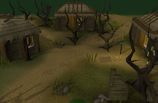

")
Mort'ton (Members)
Warning | Introduction | Location | Points of Interest | Personalities
Quests | The Perilous Denizens | Miscellaneous
Quests | The Perilous Denizens | Miscellaneous
Warning
Mort'ton is not only populated by hordes of the afflicted and the dire shades of ancient creatures, it also lies south of Mort Myre Swamp, where ghasts reach out to drain the life from anything that dares to come close. To remain safe you should first complete The Nature Spirit.
For more information about braving the swamps, see the Terrain Survival Guide.
You will also need to begin the Shades of Mort'ton quest to make best use of the town.
Introduction

Now Mort'ton has become a byword for the evil that penetrates Morytania, and for the wicked magicks that must surely come from Lord Drakan himself.
Location

Equally, adventurers are known to use the same shortcuts when seeking to return to the more civilised lands of Misthalin and the other nations to the west.
The disadvantage of the shortcut to Mort'ton is that, while others can head to an altar in the swamp (provided they have completed The Nature Spirit) to recharge their Prayer points before arriving, those approaching via tunnel and boat will be unable to recharge their Prayer points at any point on the journey.
South of the town is the hidden and fear-filled Burgh de Rott.
Those in search of the fabled tombs of long-dead warriors should head east from Mort'ton to reach The Barrows.
Points of Interest

The town features a number of prominent graves and tombs, and to the north lies the ruins of a temple where the townsfolk once paid homage to their gods.
Those adventurers who have completed Shades of Mort'ton will find more to do in Mort'ton, by continuing to purge the town of its restless spirits.
Personalities

Before Mort'ton was stricken by the disease that turned the townsfolk into the afflicted, Ulsquire Shauncy was the town's teacher and priest. His faith was no shield against the disease, though, and now he simply wanders about his house in a kind of undeath.
|

When Mort'ton was still a bustling market town Razmire was a very wealthy man; his general store and his building supplies kept the populations fed and housed, and his purse was kept full. After the emanations of the Sanguinesti region arrived, though, he turned into one of the afflicted, and now is incapable of even understanding money.
|
|
| Ulsquire Shauncy can be found in his house east of the town centre. | Razmire Keelgan can be found in his shop in the middle of town. |
Quests
The following quest can be started in Mort'ton:
- Shades of Mort'ton (Members)
The Perilous Denizens

It is difficult to say whether the afflicted are truly dead, alive or undead. They exhibit all the symptoms of undeath, yet rumours speak of a potion that can return them to normal life instantly - a feat beyond those truly undead. The afflicted were once the ordinary citizens of Mort'ton, but now they are mindless automatons that wander dully.
|

In most parts of the world the dead are content to lie in their graves and be dead; in Morytania it seems to be a rare spirit that does not prefer to wander among the living, jealously lashing out to drain their life. Loar shades are the remnants of those buried beneath the town, and their touch is an icy chill that drains adventurers' energy as well as injuring them.
|
|
| Afflicted can be found throughout Mort'ton. | Loar shades can be found throughout Mort'ton. |
Miscellaneous
- If you can somehow convert Razmire back into a human, his general store offers a large number of vials and his building supplies include timber beams and limestone bricks.
- It is worth noting that though there is no bank in Mort'ton, Burgh de Rott has one available for friends of the town.
- If you have the Gadderhammer, you might find it useful in combating the shades, as its previous owner had a particular loathing for those spirits.
- Playing the Shades of Mort'ton offers the chance to attain splitbark armour, fine cloth and other useful items.

More articles in
Cities and Towns
|
|